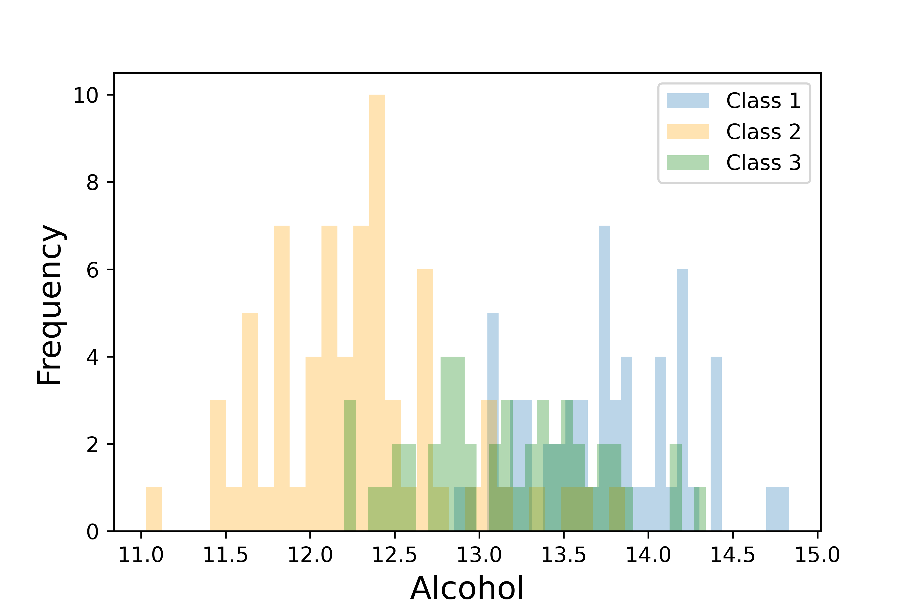
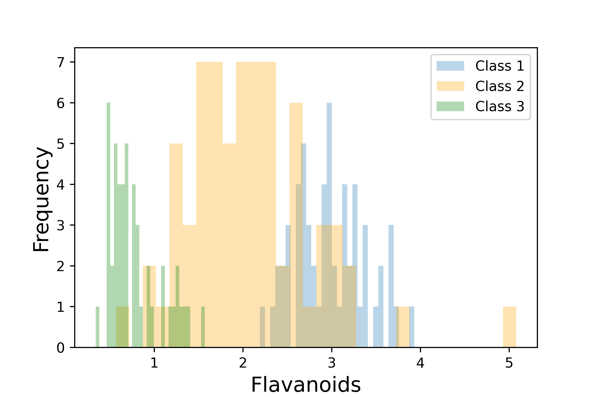
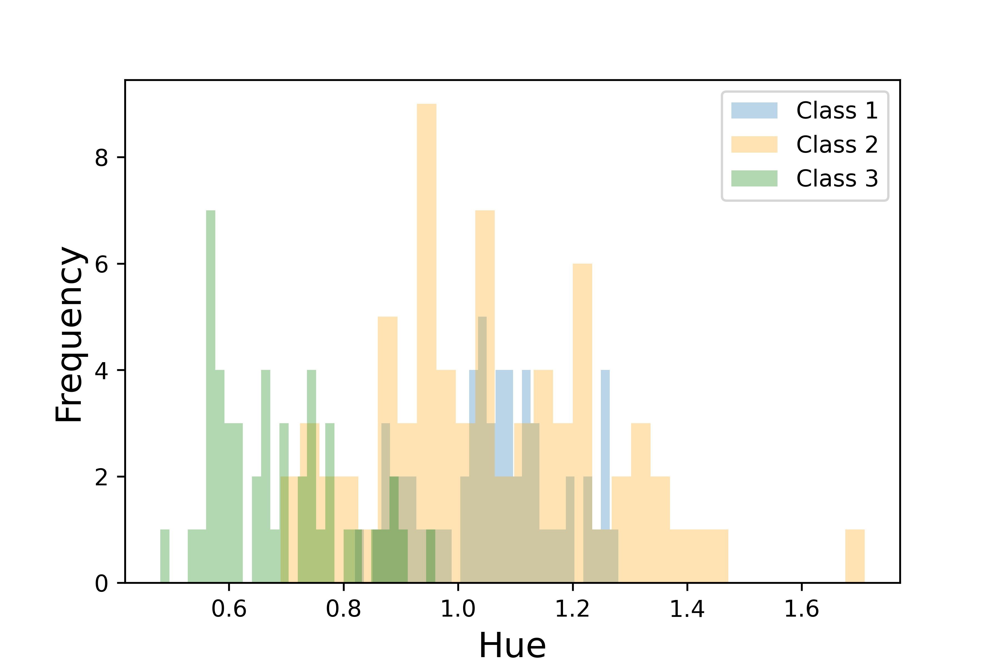
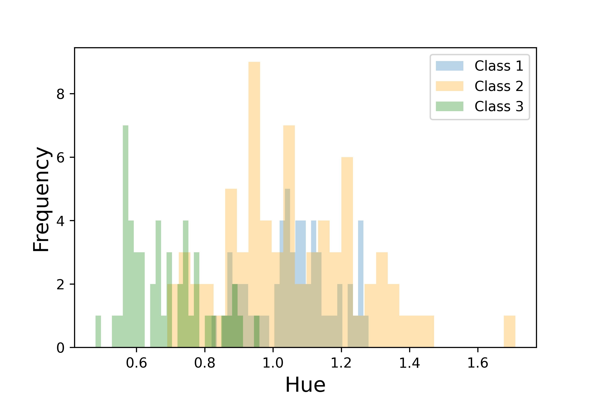
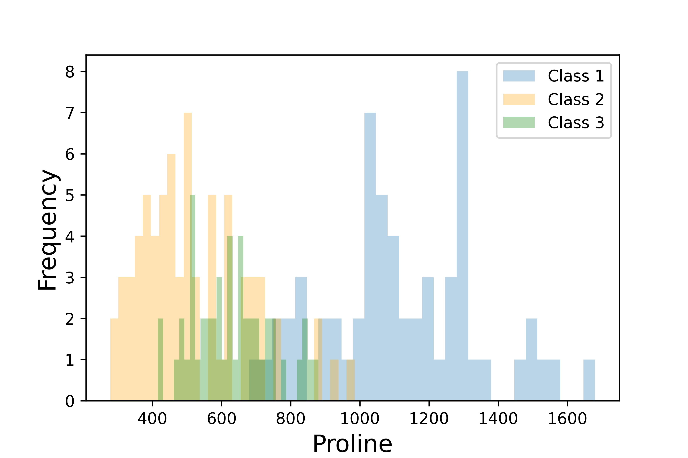
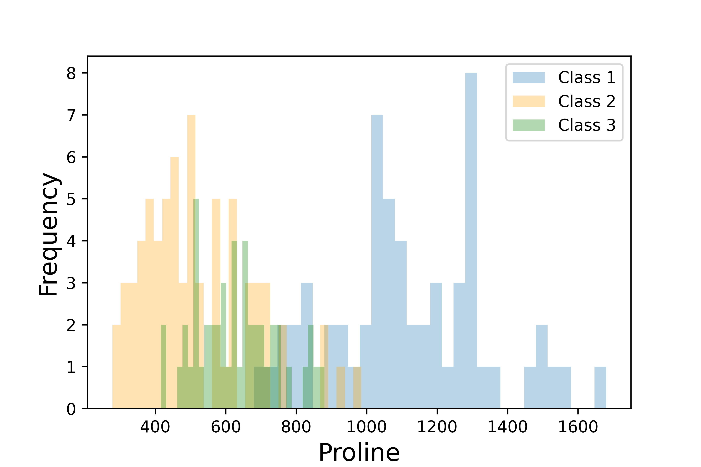
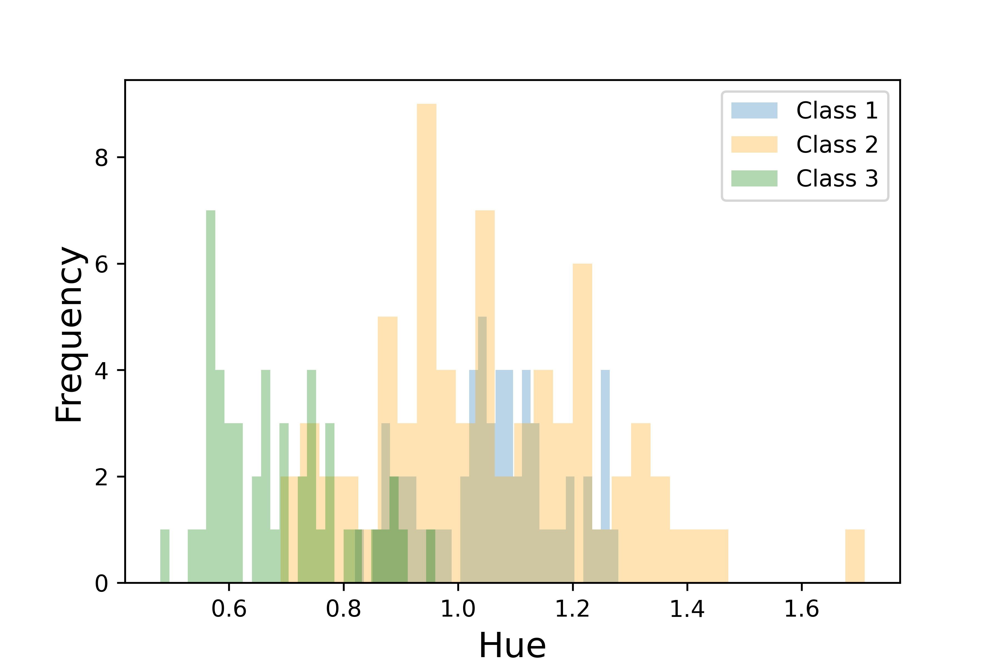
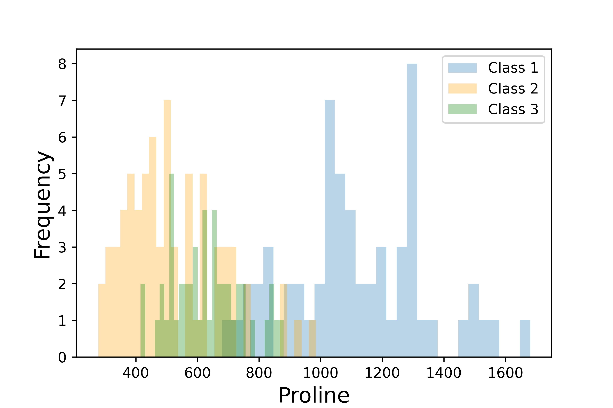

This project was part of the Machine Learning and Data Mining course I took during my master’s program. The main goal was to develop supervised machine learning models to solve classification and regression tasks. My team and I decided to use a dataset from the UCI Machine Learning Repository, which data are the results of a chemical analysis of wines grown in the same region in Italy but derived from three different cultivars. The dataset includes 178 records each with 13 features and 1 output class. The features are the measured quantities of 13 different constituents (e.g. Magnesium, Alcohol, Flavanoids etc.), while the output class corresponds to different origins of the wines, or cultivars.
Data preparation and visualization
| Attribute | Type | Mean | Stand. Dev. | Median | Max | Min | Mode |
|---|---|---|---|---|---|---|---|
| Class | Discrete, Nominal | - | - | - | - | - | - |
| Alcohol | Continuous, Ratio | 13.00 | 0.81 | 13.05 | 14.83 | 11.03 | 13.05 |
| Malic acid | Continuous, Ratio | 2.34 | 1.11 | 1.865 | 5.8 | 0.74 | 1.73 |
| Ash | Continuous, Ratio | 2.37 | 0.27 | 2.36 | 3.23 | 1.36 | 2.30 |
| Alcalinity of ash | Continuous, Ratio | 19.49 | 3.33 | 19.5 | 30 | 10.6 | 20 |
| Magnesium | Continuous, Ratio | 99.74 | 14.24 | 98 | 162 | 70 | 88 |
| Phenols | Continuous, Ratio | 2.30 | 0.62 | 2.355 | 3.88 | 0.98 | 2.20 |
| Flavanoids | Continuous, Ratio | 2.03 | 1.00 | 2.135 | 5.08 | 0.34 | 2.65 |
| Nonflavanoid phenols | Continuous, Ratio | 0.36 | 0.12 | 0.34 | 0.66 | 0.13 | 0.26 |
| Proanthocyanins | Continuous, Ratio | 1.59 | 0.57 | 1.555 | 3.58 | 0.41 | 1.25 |
| Color intensity | Continuous, Ratio | 5.06 | 2.31 | 4.69 | 13 | 1.28 | 3.8 |
| Hue | Continuous, Ratio | 0.96 | 0.23 | 0.965 | 1.71 | 0.48 | 1.04 |
| OD280/OD315 | Continuous, Ratio | 2.61 | 0.71 | 2.78 | 4 | 1.27 | 2.87 |
| Proline | Continuous, Ratio | 746.89 | 314.02 | 673.5 | 1680 | 278 | 680 |
The dataset does not present missing values, nor corrupted data, or general data issues. However, the presence of outliers was investigated. The method used for such purpose involves the z-score normalization of the dataset and the boxplots of the obtained standardized dataset (Figure 1).
Main findings from the boxplots:
- Malic Acid, Ash, Alcalinity of Ash, Magnesium, Proanthocyanins, Color intensity and Hue present outliers;
- the distribution of Alcohol, Ash, Alcalinity of Ash and Hue is close to a normal distribution;
- Malic acid and Proline have a positive-skewed distribution.
In order to investigate which attributes are more adequate to conduct a classification problem, the frequency of the 13 attributes was plotted. The frequency distributions of the attributes were plotted for each of the three different wine classes (Class 1, Class 2, and Class 3) to identify which attributes might be more useful for distinguishing between the different wine classes.


 

 

Figure 2: Most relevant attributes distributions for each wine class


Figure 2 illustrates the distributions of those attributes with a clear separation between two classes at least. For example, in the plot for the Alcohol content, it is possible to see a division between Class 1 and Class 2 while the Flavanoinds content is able to distinguish Class 1 wines from those belonging to Class 3. Similar observations can be carried out for Color Intensity, Hue, OD280/OD315 and Proline.
Another important aspect to consider is the correlation between the continuous attributes of the dataset.
The correlation matrix reported in Figure 3 shows that the highest correlation values is obtained when the relation Phenols vs. Flavanoids is considered. Therefore, these are the attributes characterized from a relation with the highest tendency towards a linear relationship.
Regression
The regression problem consisted of predicting the quantity of phenols given the amount of other constituents in a wine. The wine class (Class 1, 2 or 3) is a discrete attribute therefore, it was not taken into account for the regression. However, it could have been inputted into the models if it was transformed through 1-of-K encoding.
To run the regression, two models were used: a linear regression (least-squared method) and a feed-forward artificial neural network. The models were developed in Python through Scikit-learn and PyTorch modules. Regularization was employed in both models to control overfitting. More in detail:
- For the regularization of the Linear Regression model, a regularization parameter (λ) was introduced. The trial values for λ ranged from 10-3 to 106.
- The ANN consists of an input layer with 12 neurons, each corresponding to a constituent other than phenols (the target variable). It includes a singular hidden layer with a number of neurons h, where the Hyperbolic Tangent Activation Function is used. The output layer contains a single neuron to predict the amount of phenols. The model was regularized by adjusting the number of neurons in the hidden layer, considering networks with h equal to 3, 5 and 7.
Two-layer cross-validation was used to tune the regularization parameters of the models and to estimate the generalized error. In addition to the two models previously introduced, a baseline model has been considered.
| Fold index (i) | Baseline, Etest,i | Linear Regr, λi | Linear Regr, Etest,i | ANN, hi | ANN, Etest,i |
|---|---|---|---|---|---|
| 1 | 0.40 | 10 | 0.12 | 3 | 0.15 |
| 2 | 0.49 | 10 | 0.17 | 3 | 0.22 |
| 3 | 0.40 | 10 | 0.09 | 3 | 0.12 |
| 4 | 0.33 | 10 | 0.09 | 3 | 0.10 |
| 5 | 0.23 | 10 | 0.18 | 3 | 0.16 |
| 6 | 0.29 | 10 | 0.09 | 3 | 0.11 |
| 7 | 0.31 | 10 | 0.09 | 3 | 0.14 |
| 8 | 0.48 | 10 | 0.11 | 3 | 0.18 |
| 9 | 0.35 | 10 | 0.10 | 3 | 0.10 |
| 10 | 0.38 | 10 | 0.05 | 3 | 0.10 |
| Egen | 0.366 | - | 0.109 | - | 0.138 |
Table 2 reports the best value of the regularization parameters and the correspondent test error in each fold. Moreover, in the last row, the mean generalized error is reported for each of the three models. It is clear that there is not too much difference in the performance of ANN and Linear Regression however, both models give better estimations when compared to the Baseline model. Additional comments:
- The optimal value of the parameters (λ=10 and h=3) was selected by choosing the model with the lower test error in the inner layer of the two-layer cross-validation.
- The Python script returned also the values of the weights for each of the models. It could be observed that the attribute with the highest weight was the quantity of flavonoids. This was already expected considering the high correlation value between Phenols and Flavanoids shown in the correlation matrix (Figure 3).
Classification
The target of the classification is the class of wine while the input attributes are the quantities of each of the 13 constituents. The wine classes are 3 however, in the present project the task was reduced to a binary classification problem. Among the three target categories, class 2 represents almost 40% of the total data, for that reason, it was decided to classify into class 2 and other classes (i.e. class 1 and class 3). Therefore, class 2 is represented by 1 and other classes by 0.
The approach used for the classification problem is similar to that adopted for the regression problem. Therefore, two different models have been developed in Python and a two-layer cross-validation was used to tune the regularization parameters of the models and to estimate the generalized error. The models used for the classification are:
- Logistic Regression with regularization parameter λ. The range of λ values used in the regularization are 0.01, 0.1, 1, and 10.
- K-Nearest Neighbor that has been regularized on the number of neighbours K. The tested values for K range from 5 to 30.
Table 3 reports the results of the two-layer cross-validation applied in the context of the classification problem.
| Fold index (i) | Baseline, Etest,i | Logistic Regr, λi | Logistic Regr, Etest,i | KNN, Ki | KNN, Etest,i |
|---|---|---|---|---|---|
| 1 | 0.61 | 0.1 | 0.22 | 5 | 0.17 |
| 2 | 0.44 | 0.1 | 0.00 | 5 | 0.06 |
| 3 | 0.39 | 1 | 0.00 | 5 | 0.06 |
| 4 | 0.17 | 10 | 0.17 | 5 | 0.06 |
| 5 | 0.17 | 1 | 0.11 | 5 | 0.00 |
| 6 | 0.33 | 1 | 0.11 | 5 | 0.00 |
| 7 | 0.50 | 1 | 0.00 | 5 | 0.11 |
| 8 | 0.39 | 0.1 | 0.00 | 5 | 0.06 |
| 9 | 0.41 | 1 | 0.00 | 5 | 0.00 |
| 10 | 0.59 | 1 | 0.18 | 5 | 0.12 |
| Egen | 0.400 | - | 0.079 | - | 0.064 |